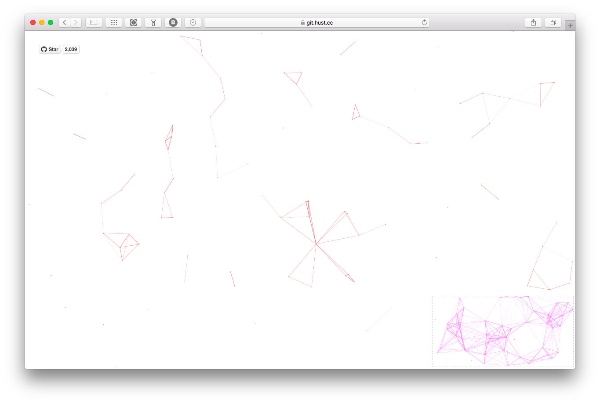
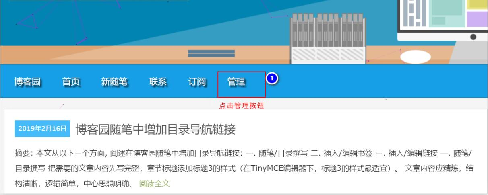
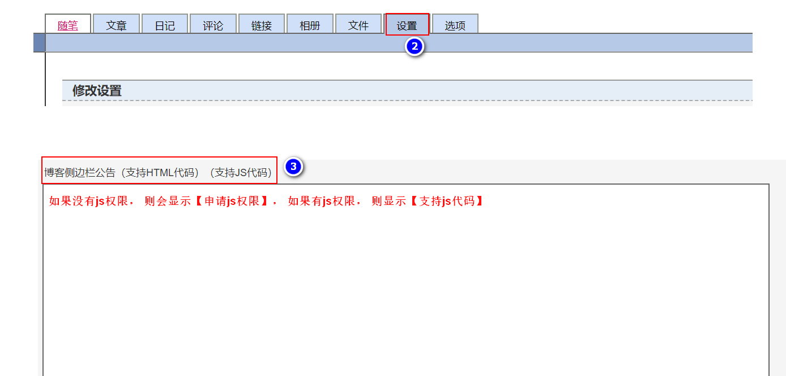
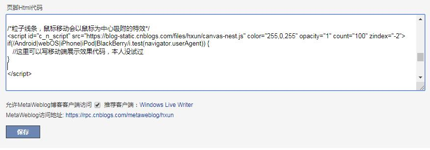
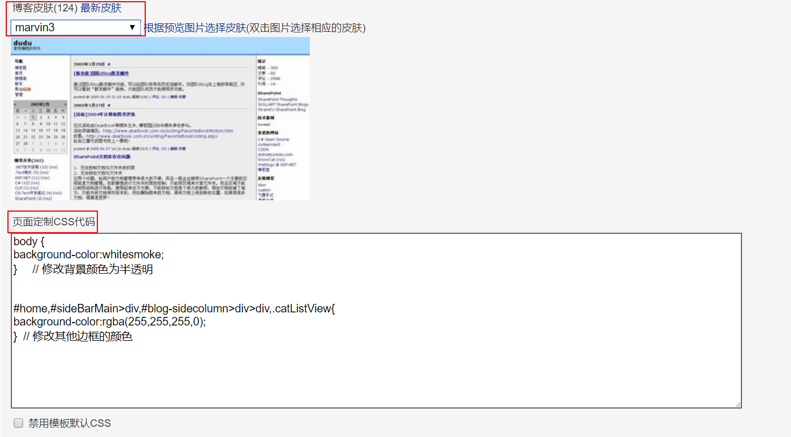

在博客园的页面, 出现鼠标粒子吸附的特效, 如图所示:

点击博客园的【管理】 → 【设置】→ 一直往下拉, 找到【博客侧边栏公告（支持HTML代码）（申请JS权限）】
向contact@cnblogs.com 发送邮件， 为了尽快通过权限申请， 邮件模板如下：
尊敬的博客园管理员：
请问是否可以帮我开通js权限，我需要一些简单的js来解决问题，例如鼠标点击特效、代码高亮等外观调整。
谢谢您的支持！

--------

点击博客园的【管理】 → 【设置】 → 一直往下拉, 找到【页脚Html代码】，添加如下代码内容， 保存即可：
/*粒子线条，鼠标移动会以鼠标为中心吸附的特效*/
<script id="c_n_script" src="https://blog-static.cnblogs.com/files/hxun/canvas-nest.js" color="255,0,255" opacity="1" count="100" zindex="-2">
if(/Android|webOS|iPhone|iPod|BlackBerry/i.test(navigator.userAgent)) {
//这里可以写移动端展示效果代码，本人没试过
}
</script>
color: 线条颜色, 默认: '0,0,0' ；三个数字分别为(R,G,B)，注意用,分割pointColor: 交点颜色, 默认: '0,0,0' ；三个数字分别为(R,G,B)，注意用,分割opacity: 线条透明度（0~1）, 默认: 0.5count: 线条的总数量, 默认: 150zIndex: 背景的z-index属性，css属性用于控制所在层的位置, 默认: -1https://blog-static.cnblogs.com/files/hxun/canvas-nest.js 这是添加的文件的链接如下图：

再返回博客园的页面， 就有鼠标粒子吸附特效了啊。
但是由于博客园的主题设置，可能只有两侧的可以点击聚集粒子，中间的部分被博客园的主题中的容器覆盖住了。可以再添加css。
点击博客园的【管理】 → 【设置】 → 找到【博客皮肤】和【页面定制css代码】，自定义博客皮肤，添加如下css代码内容， 保存即可：
body {
background-color:whitesmoke;
} // 修改背景颜色为半透明
#home,#sideBarMain>div,#blog-sidecolumn>div>div,.catListView{
background-color:rgba(255,255,255,0);
} // 修改其他边框的颜色

good luck！